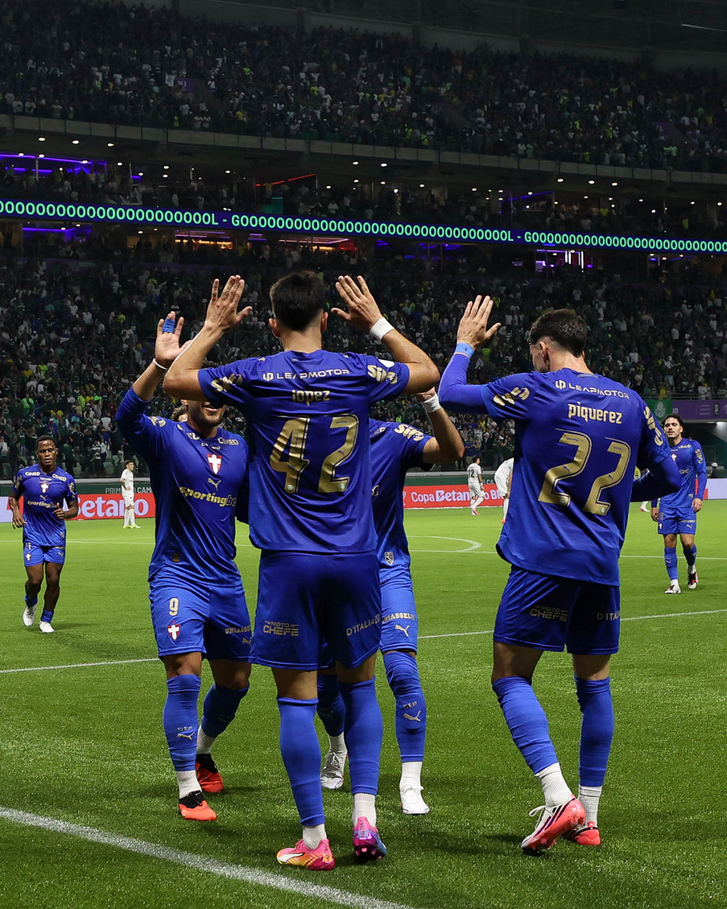

Santos e Palmeiras entram em campo para escrever mais um capítulo de uma rivalidade que já decidiu título e classificação na Copa do Brasil. O clássico começa às 21h30, na Vila Belmiro, com transmissão da Globo, SporTV, Premiere e Amazon Prime e vale uma vaga nas semifinais do torneio nacional. O Palmeiras carrega uma vantagem expressiva: venceu o primeiro encontro das quartas de final por 3 a 0 e pode até ser derrotado por dois gols de diferença para continuar na competição.
Para o Santos, o cenário exige uma atuação praticamente perfeita. Uma vitória por três gols de diferença iguala o placar agregado e leva a definição da vaga para os pênaltis; para avançar diretamente, o time da Vila precisa vencer por quatro ou mais gols. O tamanho da missão transforma a partida em um daqueles confrontos em que o primeiro gol pode alterar completamente o ambiente do estádio e a estratégia dos dois lados.
A eliminatória ganhou essa configuração após a vitória palmeirense no jogo de ida. Em 26 de agosto, no Nubank Parque, Flaco López marcou duas vezes e Andreas Pereira completou o placar que deixou o Verdão em posição privilegiada para o reencontro na Baixada Santista.
O resultado não definiu matematicamente o classificado, mas mudou completamente a natureza da volta. O Palmeiras pode trabalhar com o placar e obrigar o adversário a correr riscos. O Santos, por sua vez, não tem a possibilidade de esperar o jogo se desenvolver por muito tempo: precisa buscar gols sem permitir que os espaços oferecidos pela necessidade ofensiva tornem a missão ainda mais difícil.
É justamente essa combinação que dá interesse à partida. Para o Peixe, um gol cedo pode aumentar a pressão sobre o rival e recolocar a torcida no confronto. Para o Verdão, marcar na Vila significaria elevar ainda mais a barreira que o adversário precisa superar.
Santos tenta construir reação histórica na Vila Belmiro
O principal desafio santista não é apenas vencer. É vencer por margem suficiente para mudar uma eliminatória que chegou à Vila com três gols de vantagem para o rival.
Esse tipo de situação exige equilíbrio entre urgência e organização. Avançar jogadores sem proteção pode criar espaços para um Palmeiras que já demonstrou capacidade de ser eficiente quando encontra campo para atacar. Por outro lado, uma postura excessivamente cautelosa favorece o time que já começa a noite classificado.
A Vila Belmiro entra nesse contexto como elemento importante. O Santos construiu boa parte de sua identidade histórica em partidas decisivas dentro de casa, e o confronto contra o Palmeiras acrescenta mais um jogo eliminatório à longa relação do clube com o estádio.
A Copa do Brasil também tem peso especial na história santista. O clube conquistou o torneio em 2010, em uma equipe marcada por Neymar, Robinho, Paulo Henrique Ganso e outros nomes de uma geração ofensiva que se tornou emblemática.
Palmeiras pode alcançar a décima semifinal
Do lado alviverde, a partida oferece a possibilidade de aumentar uma trajetória já extensa na competição. O Palmeiras disputa a Copa do Brasil pela 31ª vez e chegou às quartas de final pela 19ª oportunidade. Caso confirme a vantagem construída na ida, alcançará a semifinal do torneio pela décima vez.
O clube também carrega quatro títulos da Copa do Brasil e um histórico de campanhas importantes no mata-mata. Esse peso ajuda a inserir Santos x Palmeiras em um contexto maior dentro da história da Copa do Brasil, competição criada em 1989 e marcada por decisões entre clubes de diferentes regiões, clássicos estaduais e confrontos em jogos de ida e volta.
Em 2026, o Palmeiras já viveu uma situação de vantagem larga antes da volta. Nas oitavas de final, derrotou o Fortaleza por 3 a 0 no primeiro encontro e confirmou a classificação mesmo perdendo a segunda partida por 3 a 2. Nas quartas, voltou a construir exatamente três gols de vantagem na ida, desta vez contra o Santos.
Clubes já decidiram a Copa do Brasil
O clássico de 2026 é o terceiro mata-mata entre Santos e Palmeiras na história da Copa do Brasil. Os dois anteriores terminaram com o Palmeiras levando a melhor.
O primeiro encontro aconteceu nas semifinais de 1998. Palmeiras e Santos empataram por 1 a 1 no então Palestra Italia. Na Vila Belmiro, novo empate, desta vez por 2 a 2. Pelo regulamento utilizado naquela edição, o Palmeiras avançou pelo critério de gols marcados fora de casa e posteriormente conquistou o título diante do Cruzeiro.
O reencontro teve um peso ainda maior em 2015: os rivais fizeram a final da competição. O Santos venceu a primeira partida por 1 a 0 na Vila Belmiro. Na volta, o Palmeiras ganhou por 2 a 1, levando a decisão para os pênaltis. O time alviverde venceu a disputa por 4 a 3 e ficou com o troféu.
Assim, as quartas de 2026 acrescentam um terceiro capítulo à história particular do clássico na competição. A diferença é que, desta vez, o Palmeiras chegou ao segundo jogo carregando uma vantagem de três gols.
Prováveis escalações
A tendência é que Cuca mantenha a base do Santos que venceu o Corinthians pelo Campeonato Brasileiro. A alteração esperada é a entrada de Christian Oliva no lugar de Gustavo Henrique, que deixou o último clássico com problema muscular. Neymar, ausente do jogo de ida contra o Palmeiras, aparece entre os nomes previstos para começar a decisão.
Pelo Santos, Vinícius Lira, Gabriel Menino, Gustavo Henrique e Pepê Fermino aparecem entre os desfalques. Escobar e Neymar estão pendurados. No Palmeiras, não há jogadores pendurados para a partida.
Provável Santos: Gabriel Brazão; Igor Vinícius, Lucas Veríssimo, Luan Peres e Escobar; Willian Arão, Christian Oliva, Gabriel Bontempo e Barreal; Neymar e Gabigol.
No Palmeiras, Abel Ferreira tem algumas possibilidades de mudança. Jhon Arias, Piquerez e Barboza participaram do último treino integrados ao elenco, mas chegaram ao dia da partida tratados como dúvidas. Paulinho, Ramón Sosa e Jefté são desfalques. A formação provável mantém nomes importantes do time que construiu a vantagem na ida, entre eles Andreas Pereira, Flaco López e Vitor Roque.
Provável Palmeiras: Carlos Miguel; Giay, Murilo, Gustavo Gómez (Barboza) e Arthur; Marlon Freitas (Emiliano Martínez), Andreas Pereira (Lucas Evangelista), Felipe Anderson e Mauricio; Flaco López e Vitor Roque.
Árbitro: Davi de Oliveira Lacerda
Um clássico com dois objetivos completamente diferentes
A eliminatória chega à partida decisiva das quartas com objetivos muito claros. O Santos precisa transformar a Vila Belmiro no ponto de partida para uma reação de pelo menos três gols. O Palmeiras precisa fazer justamente o contrário: controlar o ambiente, impedir uma pressão sustentada do rival e utilizar a vantagem construída na primeira partida.
A margem necessária para o Peixe levar a decisão para os pênaltis não é inédita na temporada. Antes do jogo de volta das quartas de final, o time havia conseguido quatro vitórias oficiais por três ou mais gols de diferença em 2026:
- Santos 6 x 0 Velo Clube — Campeonato Paulista
- Santos 3 x 0 Deportivo Cuenca — Copa Sul-Americana
- Universidad Central 1 x 4 Santos — Copa Sul-Americana
- Vasco 0 x 3 Santos — Campeonato Brasileiro
Ou seja: para levar a vaga aos pênaltis, o Santos precisa repetir uma margem que já alcançou quatro vezes no ano. Para avançar diretamente, porém, a exigência é ainda maior: vencer o Palmeiras por quatro ou mais gols de diferença.
O retrospecto mostra que o Peixe já foi capaz de construir goleadas em diferentes competições e contextos ao longo de 2026, mas o desafio desta vez é maior pelo nível do adversário, pelo peso do clássico e pela necessidade de atacar sem oferecer espaços a um Palmeiras que chega à Vila Belmiro protegido pela vantagem construída no primeiro jogo.
O contexto também reforça por que a Copa do Brasil produz confrontos tão particulares. Um resultado expressivo na ida pode mudar completamente o roteiro da volta, mas não elimina a tensão de um clássico eliminatório. O Santos entra obrigado a atacar; o Palmeiras inicia a noite com a classificação nas mãos.